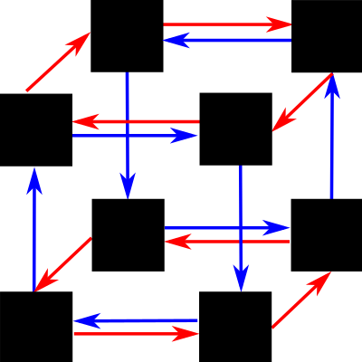
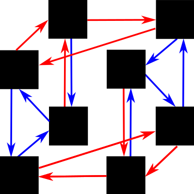

<!doctype html>
<html>
<head>
    <title>Pilots</title>
    <script src="https://ajax.googleapis.com/ajax/libs/jquery/1.11.1/jquery.min.js"></script>
    <script src="util/group_theory.js"></script>
    <script src="util/etc.js"></script>
    <script src="jspsych/jspsych.js"></script>
    <script src="jspsych/plugins/jspsych-instructions.js"></script>
    <script src="jspsych/plugins/jspsych-survey-text.js"></script>
    <script src="jspsych/plugins/fractal-mutation-plugin.js"></script>
    <script src="jspsych/plugins/two-door-navigation-plugin.js"></script>
    <script src="jspsych/plugins/drag-drop-on-image-plugin.js"></script>
    <script src="jspsych/plugins/jspsych-survey-multi-choice.js"></script>
    <link href="jspsych/css/jspsych.css" rel="stylesheet" type="text/css"></link>
</head>
<body>
</body>
    <script>
    var first_square_cycles = false; // will first task be dihedral group? (otherwise dicyclic)
    var isomorphic = false; // will two tasks be isomorphic?

    if (first_square_cycles) {
        var this_group_a = new square_cycles();
        if (isomorphic) {
            var this_group_b =  new square_cycles();
        } else {
            var this_group_b = new tri_cycles();
        }
    } else {
        var this_group_a = new tri_cycles();
        if (isomorphic) {
            var this_group_b = new tri_cycles();
        } else {
            var this_group_b = new square_cycles();
        }
    }

    var this_fractal_assignment = ['images/blu_wht.png', 'images/cyn_red.png', 'images/grn_red.png', 'images/gry_blk.png', 'images/org_blu.png', 'images/pnk_blu.png', 'images/ylw_pnk.png', 'images/ylw_slt.png'];
    shuffle(this_fractal_assignment)

        
    var this_mutagen_assignment = [1, 0];
    shuffle(this_mutagen_assignment);
    var this_room_assignment = ["red", "green", "blue", "grey", "ivory", "orange", "pink", "brown", "yellow", "purple", "cyan", "olive"];
    shuffle(this_room_assignment);
    var this_door_generator_assignment = [1, 0];
    shuffle(this_door_generator_assignment);
    var this_door_color_assignment = ["white", "black"];
    shuffle(this_door_color_assignment);

    var block_timeline = [
        {goal: 2, start: 0},
        {goal: 6, start: 2}
//        {goal: 5, start: 6},
//        {goal: 1, start: 5},
//        {goal: 7, start: 1},
//        {goal: 3, start: 7},
//        {goal: 0, start: 3},
//        {goal: 4, start: 0}
    ]

    var welcome_instructions = {
        type: 'instructions',
        show_clickable_nav: true,
        pages: [
            "Hi, welcome to our HIT. Please read the following instructions carefully, failure to follow them may result in your work being rejected.<br /><br />Note that if you are colorblind, this task will probably not be possible for you, and you should click 'Return HIT.'",
            "We are researchers from the Stanford Department of Psychology who are interested in learning in environments that have some noise or randomness. We are investigating this in several domainss, so we have combined two experiments in this HIT: one on spatial learning, and another on learning of relationships between visual patterns. (In today's HIT, they each should take approximately 15 minutes, for 30 minutes total.)",
            "Because learning with noise is slow, we are looking at learning over time. We will post a follow-up HIT tomorrow, and another the following day. Each HIT will include the same experiments as this HIT, and should take about 30 minutes. Because we need data from all three HITS, you will be paid $4 for completing each of the first two HITs, and $8 for the third, for a total of $16 if you complete all three.", 
            "Note: because we are interested in intuitive learning under noise, we ask that you do your best without relying on notes or other external aids during any of these HITs."

        ]
    }

    var fractal_instructions = {
	type: 'instructions',
        show_clickable_nav: true,
	pages: [
            'Welcome to our experiment. This experiment investigates learning of relationships between visual patterns. If you do not wish to participate in this experiment, please return this HIT now.',
            "In this experiment, you are a scientist. This is a very exciting time, because astronauts have just discovered alien life on Saturn\'s moon Enceladus. These creatures form strange fractal colonies in a petri dish. It was accidentally discovered that pouring sulfuric acid onto the creatures or zapping them with gamma rays will cause them to mutate into one of the other fractals. However, the results are not always predictable. Your job is to learn to make a particular fractal, by using acid (by pressing 'a' on your keyboard) or gamma rays (by pressing 'g')."
	]
    }

    var fractal_trials = {
        type: 'fractal-mutation',
        group: this_group_a,
        fractal_assignment: this_fractal_assignment,
        mutagen_generator_assignment: this_mutagen_assignment,
        timeline: block_timeline 
    };

    var room_instructions = {
	type: 'instructions',
        show_clickable_nav: true,
	pages: [
            'Welcome to our experiment. This experiment investigates spatial navigation abilities. If you do not wish to participate in this experiment, please return this HIT now.',
            "In this experiment, you are exploring a haunted house. The house nas many rooms, each of a different color.  Your task will be to learn to find your way to any room from any other room.  Each room will have a " + this_door_color_assignment[0] + " door on the left and a " + this_door_color_assignment[1] + " door on the right.  Click on a door to go throuh it. Each door will take you down a dark passage to annoter room, and over the experiment you will get a chance to learn where you can get to from each room. BEWARE: because the house is haunted, the dark passages between the rooms may not always take you to the same place..."
	]
    }

    var room_trials = {
        type: 'two-door-navigation',
        group: this_group_b,
        room_assignment: this_room_assignment,
        door_color_assignment: this_door_color_assignment,
        door_generator_assignment: this_door_generator_assignment,
        timeline: block_timeline 
    };

    var describe_structures = {
	type: 'survey-text',
	questions: ['Briefly (1-2 sentences) describe anything you noticed about navigating among the rooms.', 'Briefly (1-2 sentences) describe anything you noticed about mutating the fratals.', 'Did you feel that one of the tasks was harder than the other?'],
        rows: [5, 5, 5]
    }

    var dragging_images = this_fractal_assignment.slice(); 
    shuffle(dragging_images);
    var drag_summary = {
        type: 'drag-drop-on-image',
        background_image: "images/diagrams/square_cycles.png",
        dragging_images: dragging_images,
        target_locations: [{"x": 280, "y": 10}, {"x": 520, "y": 10},
            {"x": 280, "y": 225}, {"x": 520, "y": 225},
            {"x": 160, "y": 100}, {"x": 400, "y": 100},
            {"x": 160, "y": 310}, {"x": 400, "y": 310}],
        location_labels: [0, 1],
        instruction_text:"The fractal relationships in your experiment obeyed the structure above (black squares = fractals, red arrows = acid, blue arrows = gamma ray). Drag the fractals onto the black squares that you think they map onto (one has been placed to get you started)." 
    }

    var diagram_selection = {
        type: 'survey-multi-choice',
        questions: [ "The fractal relationships in your experiment obeyed one of the structures below, where the black squares correspond to fractals, the red arrows correspond to the acid, and the blue arrows correspond to the gamma ray. Select the structure that you think you had."],
         options: [["", ""]],
    }

        
    var debrief = {
	type: 'survey-text',
	questions: ['What is your name? (For debugging purposes, will not be in the actual experiment.)', 'Did you notice anything weird about the experiment?']
    }

    function saveData(filename, filedata){
       $.ajax({
	  type:'post',
	  cache: false,
	  url: 'http://web.stanford.edu/~lampinen/cgi-bin/save_data.php', 
	  data: {filename: filename, filedata: filedata}
       });
    }

    var start_experiment = function() {
        jsPsych.init({
            timeline: [welcome_instructions, room_instructions, room_trials, debrief, fractal_instructions, fractal_trials, describe_structures, diagram_selection, drag_summary, debrief],
            on_finish: function() {
		var d = new Date();
		saveData("il_pilot/pilot" + d.getTime() + ".json", jsPsych.data.dataAsJSON());
//                jsPsych.data.displayData('json');
            }
        })
    };

    jsPsych.pluginAPI.preloadImages(this_fractal_assignment, function() {start_experiment();});
    </script>
</html>
